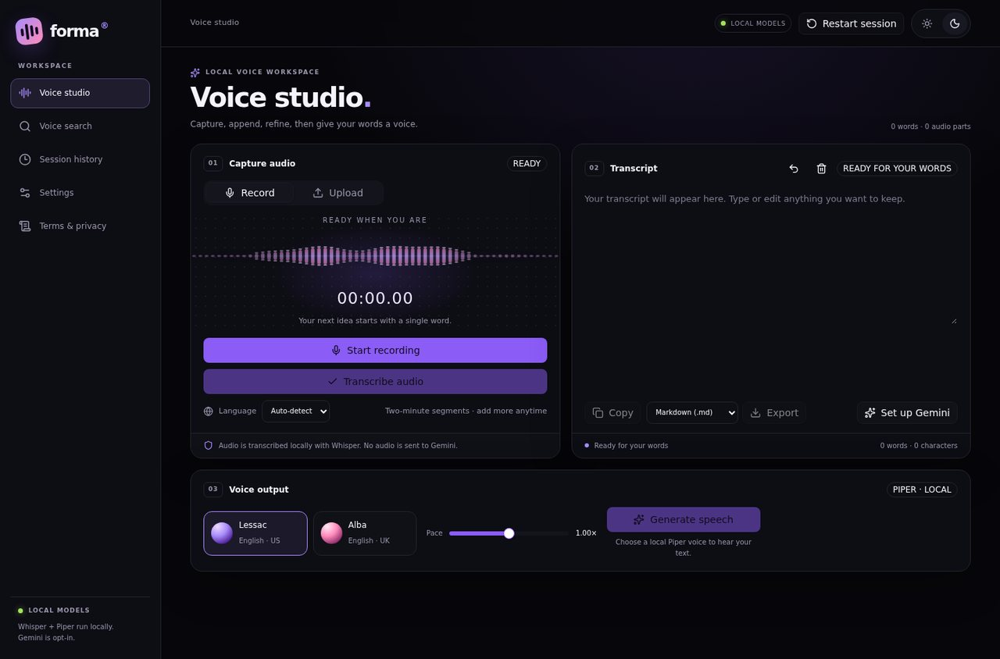
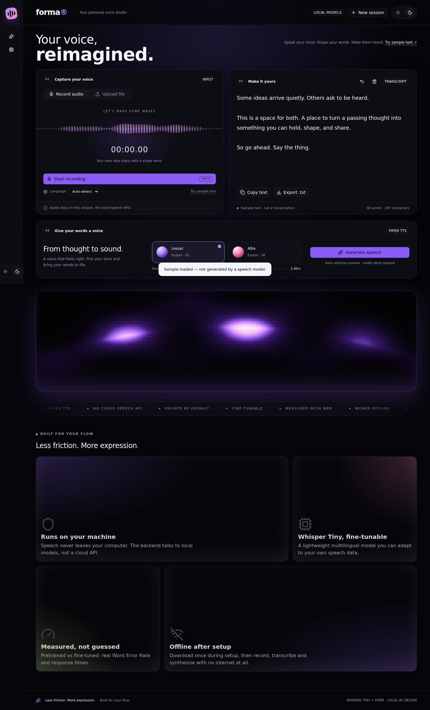
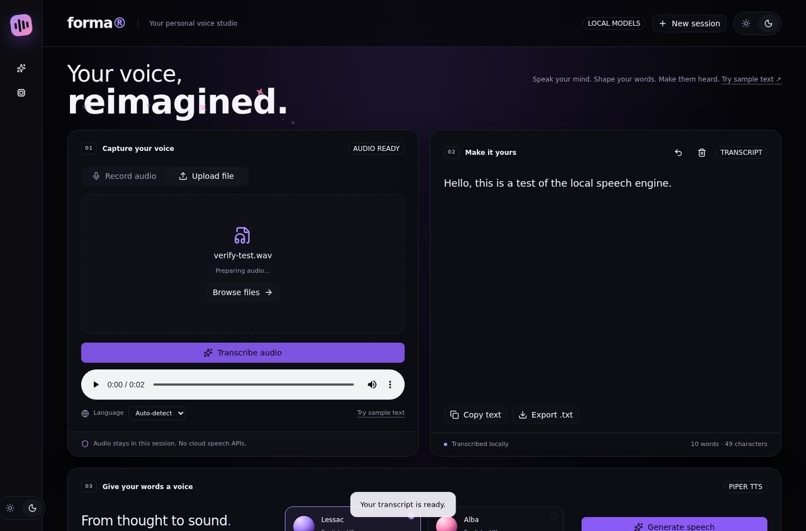
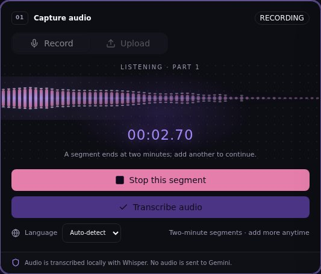
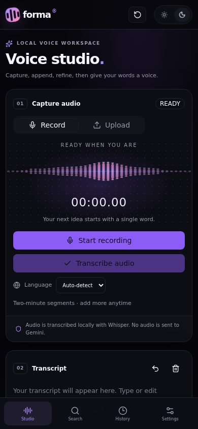

- Status
- prototype
- Language
- HTML / TypeScript / Python
- Repository
- Blaxk-C137/FORMA- ↗
- Last push
- 2026-10-15
- Source size
- 146 files · 4843 KB
- Licence
- no licence file
The brief
Problem
Transcription services want your audio in their cloud, and voice tools are inconsistent about what leaves the device. Doing it locally by hand is a day of dependency archaeology before you record a single word.
Who it is for
Someone who talks for a living — writing, drafting, dictating — and does not want the audio to leave the laptop.
Approach
npm install provisions a Python speech backend, downloads the models, verifies them and runs an offline smoke test that synthesises through both voices. Recording, transcription and speech then work offline; cloud search or summarisation fires only when explicitly clicked.
Personal contribution
Sole author. The repository includes the FastAPI speech backend, the installer and verifier scripts, the studio interface, the export layer and the Gemini integration.
Decisions that mattered
These are the choices that shaped the code — the ones worth explaining, rather than a feature list.
Setup fails loudly instead of degrading silently
There is deliberately no dummy speech mode. If Python, a wheel, a model file or the inference check is missing, installation exits with an error naming the failing step rather than pretending the pipeline works.
Model weights live outside the repository
Downloads go to a user cache directory and are verified by the installer, so the repository stays reviewable and a corrupt download is caught at install time rather than at first use.
Cloud calls are opt-in per action and stated in the interface
Tavily search and Gemini refinement happen only after the user clicks the relevant action, and the boundary is written into the UI footer rather than buried in documentation.
Limitations, stated plainly
- About 700 MB of one-time model and runtime downloads — a real cost, disclosed before install.
- Windows is the primary target; support elsewhere depends on wheel availability, and the installer refuses rather than entering a fallback mode.
- No public deployment.
What this is not: there is no public deployment for this project, so it should not be described as live, available, in production, or used by anyone. Claims about scale or reliability would require measurements that do not exist.
Screenshots from the repository
These are the images committed to the public repository — not marketing renders and not re-creations. Each one is captioned with what it shows and links back to the source.





Source chamber
An excerpt recorded by repository, commit, path and line range — so this page can be checked against the code it describes at any time. Selectable text, never executed.
// No pinned excerpt has been reviewed for this project yet. // The chamber shows an empty state rather than filling the space with // unrelated code or a mock-up. The repository is linked above.
Pointers, without a quoted body
- backend/gemini.py ↗ — Kept server-side so the key never reaches the browser, with the cloud step reachable only after an explicit user action.
What it taught
Provisioning is the product. Most people who abandon a local-first tool abandon it during installation, so the installer and its verification output got as much attention as the interface.